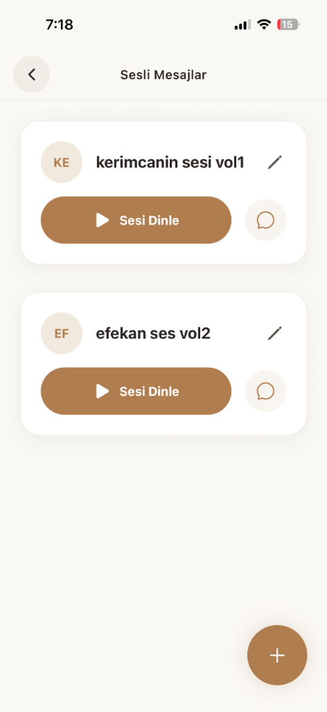
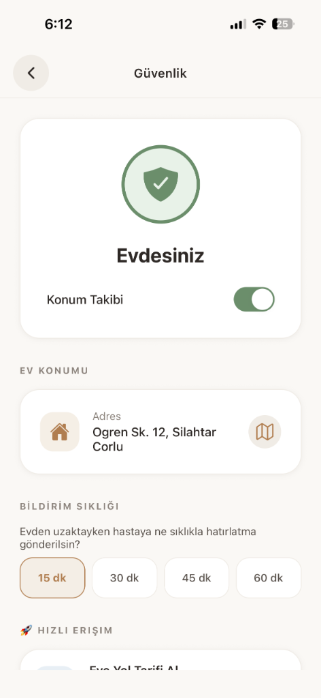
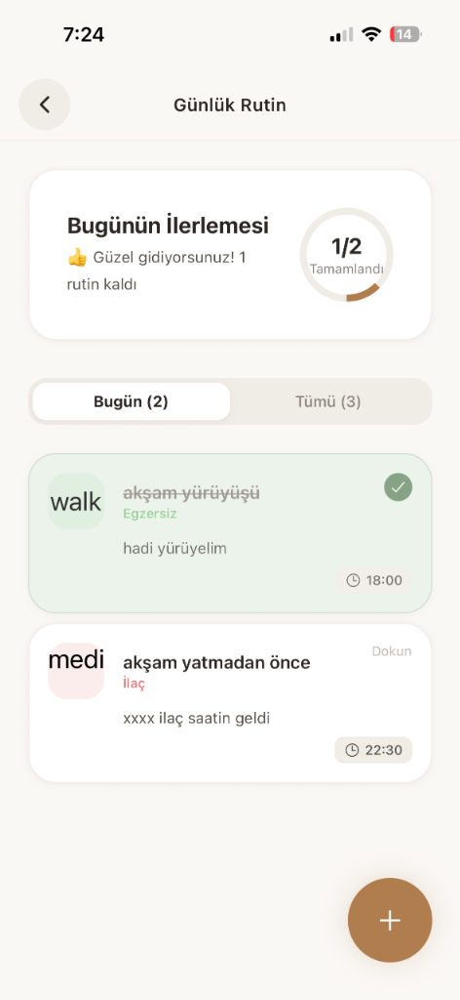

Memento; Alzheimer ve demans hastalarının bilişsel sağlığını desteklemek, güvenliğini ve günlük rutinlerini yönetmek üzere geliştirilen terapötik bir mobil sağlık (mHealth) uygulamasıdır.
React Native & Expo ile çapraz platform geliştirilmiş; AsyncStorage (yerel) ve Supabase (bulut) entegrasyonu ile çevrimdışı-öncelikli (offline-first) çalışacak şekilde tasarlanmıştır.
Hafıza egzersizleri, GPS güvenliği ve rutin yönetimini yaşlı dostu dev butonlar ve WCAG AA erişilebilirlik standartları ile sunar.
- •Problem: Hafıza zayıflaması, rutinlerin unutulması ve evden uzaklaşıp kaybolma (wandering) riski.
- •Eksiklik: Mevcut uygulamalar yaşlı kullanıcı için fazla karmaşık ve tek dikeyde kalmış (sadece oyun / sadece harita).
- •Amaç: Bilişsel gelişim, güvenlik ve psikolojik desteği aynı platformda, stresten uzak birleştirmek.
- 1Kayıt: Fotoğraf, ses ve rutinler Supabase'e tanımlanır.
- 2Takip: Cihaz kilitliyken bile Expo Location ile mesafe ölçülür.
- 3Rehabilitasyon: Dinamik eşleştirme egzersizleri sunulur.
- 4Analiz: Egzersiz oranları işlenip bakıcıya istatistik yansıtılır.
| React Native | 0.81.5 (Çapraz platform çatı) |
| Expo SDK | 54.0.31 (Donanım ve Derleme API) |
| TypeScript | 5.9.2 (Statik tip güvenliği) |
| Supabase-js | 2.91.0 (Bulut DB / Medya Storage) |
| AsyncStorage | Yerel önbellek ve Offline Mimari |



Mimari: Bileşen tabanlı üç katmanlı yapı.
- •profiles: Kullanıcı, avatar, rehber ve konum.
- •memory_cards: Görseller ve ses dosyası URI'leri.
- •routines & logs: Günlük görevler ve tamamlanma istatistikleri.
Oyunların ezberlenmesini önlemek için rastgele (unbiased) sıralar.
R = 6.371.000m. 100 m güvenli çember sınırını hesaplar.
- •Spector & Woods: Bilişsel Stimülasyon Terapisi (CST).
- •Altus vd. (2000): GPS takibi, kaybolmayı (wandering) önler.
- •Araştırma Boşluğu: Tüm süreçleri birleştiren hepsi-bir-arada ekosistem.
Bilişsel gelişim, güvenlik ve psikolojiyi tek platformda birleştiren çevrimdışı dijital asistan başarıyla geliştirildi.
- Akıllı saat (nabız/düşme algılama) entegrasyonu.
- Makine öğrenmesi ile duygu durumu analizi.